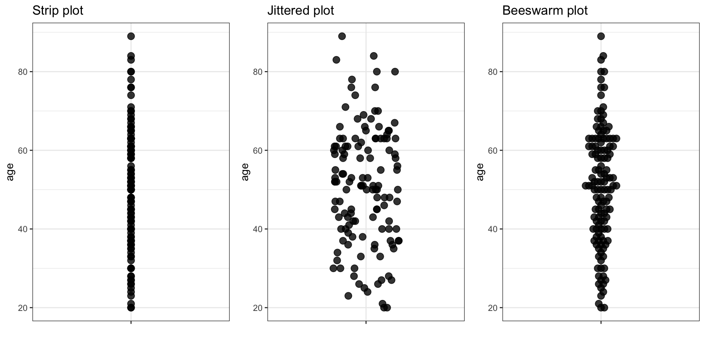
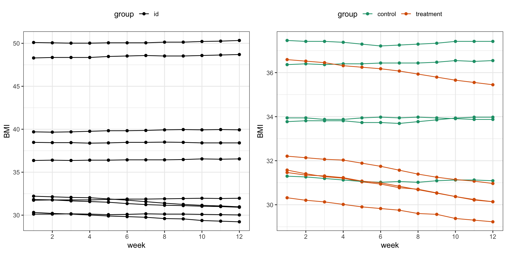
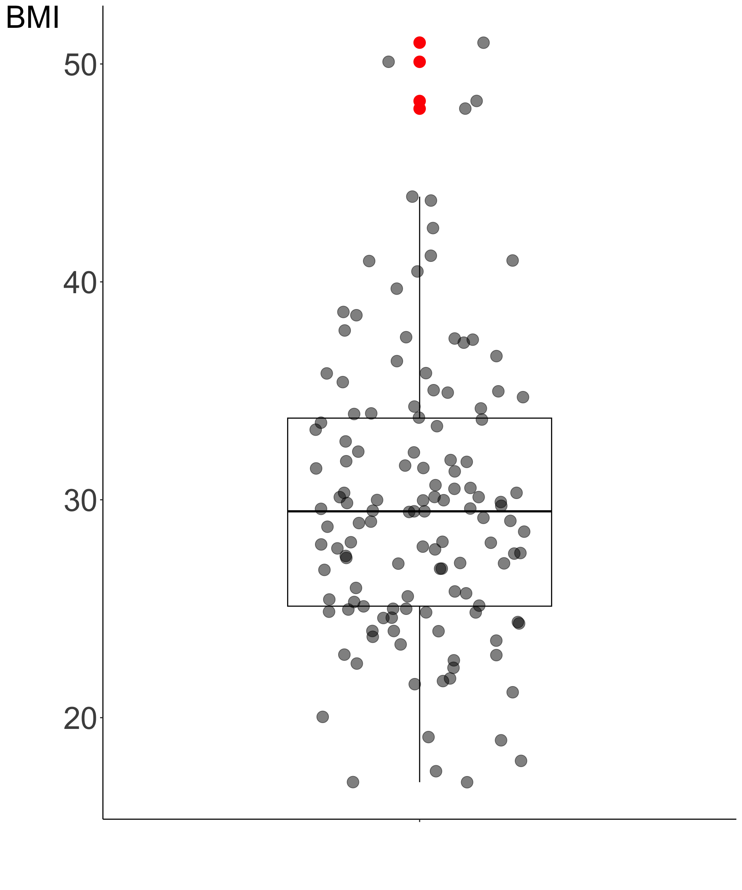

flowchart LR A(Data types) --> B(Categorical) A --> C(Numerical)
Descriptive statistics
Introduction
Two main types of statistics

- Descriptive statistics describes and summarizes the data.
- It can be contrasted with inferential statistics that uses a sample of data to make inferences about the population that the sample of data is drawn from.
Introduction
Descriptive statistics
Descriptive statistics is a term describing simple analyses of data to help getting to know the data by:
- describing the data
- showing & visualizing the data
- summarizing the data
Beyond getting to know the data descriptive statistics is used to:
- uncover potential patterns in the data, incl. outliers
- guide down-stream analysis
Data types
numerical & categorical data types
One of the first thing we tend to notice about the data is the data type. We differentiate between categorical (qualitative) and numerical (quantitative) data types.
Depending on the data type we use different methods to describe, summarize and visualize the data. Beyond descriptive statistics, we even use different methods to analyse the data.
Data types
Categorical data
Categorical data can be further divided into:
flowchart LR A(Data types) --> B(Categorical) A --> C(Numerical) B(Categorical) --> D(Nominal i.e. named) B --> E(Ordinal i.e. named and ordered)
- Nominal: named, categories are mutually exclusive and unordered
- e.g.dead/alive, healthy/sick, WT/mutant, A/B/AB/O, male/female, red/green/blue
- Ordinal: named and ordered, categories are mutually exclusive and ordered
- e.g. pain (weak, moderate, severe), very young/young/middle age/old/very old, grade I, II, III, IV
Data types
Numerical data
Numerical data can be further divided into:
flowchart LR A(Data types) --> B(Categorical) A(Data types) --> C(Numerical) C(Numerical) --> D(Discrete i.e. finite or countable infinite values) C(Numerical) --> E(Continuous i.e. infinitely many uncountable values)
- Discrete: finite or countable infinite values
- days sick last year, number of cells, number of reads
- Continuous: infinitely many uncountable values
- e.g. height, weight, concentration
Diabetes data set
Example data set
- 403 participants were interviewed in a study to understand the prevalence of obesity, diabetes, and other cardiovascular risk factors in central Virginia
- The data is available as part of
farawaypackage.
| Abbreviation | Description |
|---|---|
| id | Subject ID |
| chol | Total Cholesterol [mg/dL] |
| stab.glu | Stabilize Glucose [mg/dL] |
| hdl | High Density Lipoprotein [mg/dL] |
| ratio | Cholesterol / HDL Ratio |
| glyhb | Glycosolated Hemoglobin [%] |
| location | County: Buckingham or Louisa |
| age | age [years] |
| gender | gender |
| height | height [in] |
| weight | weight [lb] |
| frame | frame: small, medium or large |
| bp.1s | First Systolic Blood Pressure |
| bp.1d | First Diastolic Blood Pressure |
| bp.2s | Second Systolic Blood Pressure |
| bp.2d | Second Diastolic Blood Pressure |
| waist | waist [in] |
| hip | hip [in] |
| time.ppn | Postprandial Time [min] when labs were drawn |
Diabetes data set
Example data set
- Glycosolated hemoglobin \(>7.0\) is usually taken as a positive diagnosis of diabetes, so we can add variable
diabetic(yes/no) reflecting this information. - We can calculate BMI as \(BMI = 703 \times (weight \; [lb] \; / (height \;[in])^2)\) and define obesity as \(BMI \ge 30\) storing this information in
obesevariable (yes/no). - First few observations omitting samples with missing data (complete case analysis) are shown on the right.
Rows: 6
Columns: 22
$ id <int> 1002, 1011, 1016, 1024, 1036, 1252
$ chol <int> 228, 195, 177, 242, 213, 186
$ stab.glu <int> 92, 92, 87, 82, 83, 97
$ hdl <int> 37, 41, 49, 54, 47, 50
$ ratio <dbl> 6.2, 4.8, 3.6, 4.5, 4.5, 3.7
$ glyhb <dbl> 4.64, 4.84, 4.84, 4.77, 3.41, 6.49
$ location <fct> Buckingham, Buckingham, Buckingham, Louisa, Louisa, Buckingham
$ age <int> 58, 30, 45, 60, 33, 70
$ gender <fct> female, male, male, female, female, male
$ height <dbl> 1.55, 1.75, 1.75, 1.65, 1.65, 1.70
$ weight <dbl> 115.20, 85.95, 74.70, 70.20, 70.65, 80.10
$ frame <fct> large, medium, large, medium, medium, large
$ bp.1s <int> 190, 161, 160, 130, 130, 148
$ bp.1d <int> 92, 112, 80, 90, 90, 88
$ bp.2s <int> 185, 161, 128, 130, 120, 148
$ bp.2d <int> 92, 112, 86, 90, 96, 84
$ waist <dbl> 1.2446, 1.1684, 0.8636, 0.9906, 0.9398, 1.0668
$ hip <int> 57, 49, 40, 45, 41, 41
$ time.ppn <int> 180, 720, 300, 300, 240, 1020
$ BMI <dbl> 47.95, 28.07, 24.39, 25.79, 25.95, 27.72
$ obese <fct> Yes, No, No, No, No, No
$ diabetic <fct> No, No, No, No, No, NoCategorical data
Summarizing categorical data
flowchart TD A(Categorical data) --> B(Numerical summary) B(Numerical summary) --> D(Table of frequencies <br/> Proportions <br/> Percentages <br/> ...) A(Categorical data) --> C(Graphical summary) C(Graphical summary) --> E(Bar chart <br/> Pie chart <br/> Mosaic plot <br/> ...)
Categorical data
Summarizing categorical data
Let’s preview again first few measurements of diabetes data set focusing on gender and obese variables.
| id | gender | obese |
|---|---|---|
| 1002 | female | Yes |
| 1011 | male | No |
| 1016 | male | No |
| 1024 | female | No |
| 1036 | female | No |
| 1252 | male | No |
| 1253 | male | Yes |
| 1256 | female | Yes |
| 1271 | female | No |
| 1285 | male | No |
- Information about
genderandobesestatus falls under categorical data type. - To summarize these variables we can ask questions such as:
- how many participants we have in each category?
- what are the percentages or proportions in each category?
- We can also visualize these descriptive statistics in a bar chart of a pie chart.
Categorical data
Frequency table. Bar and pie charts.
Frequency table shows the number, percentages and proportions of study participants with BMI \(\ge\) 30 and with BMI < 30.
| obese | n | percent (%) | proportion |
|---|---|---|---|
| No | 72 | 55.4 | 0.6 |
| Yes | 58 | 44.6 | 0.4 |
Bar chart
Pie chart
Categorical data
Summary and contingency table: 2 categorical variables
When we are interested in how one categorical variable is related to another categorical variable, we can use a summary table. For instance, we can look at the relationship between obesity (yes/no) and diabetes (yes/no).
| obese | Total | Diabetic | Diabetic (%) |
|---|---|---|---|
| No | 72 | 39 | 54.17 |
| Yes | 58 | 18 | 31.03 |
Contingency table, sometimes called two-way frequency table, shows the multivariate frequency distribution of variables.
| Non-diabetic | Diabetic | Sum | |
|---|---|---|---|
| Non-obese | 57 | 15 | 72 |
| Obese | 43 | 15 | 58 |
| Sum | 100 | 30 | 130 |
Categorical data
Bar charts: 2 categorical variables
Bar charts can be used to visualize two and more categorical variables, e.g. by using stacking, side-by-side bars or colors.
Categorical data
Mosaic plot
Figure 3: Mosaic plots display contigency tables, here of obesity and diabetic status among study pariticipants (left) and colour-coded by gender (right).
Numerical data
Summarizing numerical data
Numerical data can be visualized and summarized in many ways. Common plots include histograms, density plots and scatter plots. Summary statistics include measures of location such as mode and median and measures of spread such as variance or median absolute deviation. It is also common to visualize summary statistics, e.g. on box plot.
flowchart TD A(Numerical data) --> B(Numerical summary) A(Numerical data) --> C(Graphical summary) B(Numerical summary) --> D(Measures of location <br/> e.g. mode, average, median) B --> E(Measures of spread <br/> e.g. quartiles, variance, standard deviation) C(Graphical summary) --> F(Histogram <br/> Density plot <br/> Box plot <br/> ...)
Numerical data
Strip plot, Jittered strip plot & Beeswarm plot
If it is technically feasible, it is recommended to visually assess all measurements on a plot.

Numerical data
Histogram & density plot
A histogram bins the data and counts the number of observations that fall into each bin. A density plot is like a smoothed histogram where the total area under the curve is set to 1. A density plot is an approximation of a distribution.
Numerical data
Scatter plot: 2 numerical variables
Scatter plots are useful when studying a relationship (association) between two numerical variables.
Numerical data
Scatter plot: 2 numerical variables cont.
Sometimes, it is useful to connect the observations in the order in which they appear, e.g. when analyzing time series data. The diabetes data set does not contain any measurements over time but we can simulate some BMI values over time for demonstration purposes.

Measures of location & spread
flowchart LR A(Representative value) --> C(Image of data) B(Spread) --> C(Image of data)
- It is not always easy to get a “feeling” for a set of numerical measurements unless we summarize the data in a meaningful way.
- We can further condense the information shown previously on diagrams by reporting what constitutes a representative value. If we also know how widely scattered the observations are around it, we can formulate an image of data.
- The average is a general term for a measure of location and some common ways of calculating the average are mode, mean and median.
Measures of location
Mode
- Mode values is the value that most common occurs across the measurements. It can be found for numerical and categorical data types.
- For instance, we can find
agemode value by counting how many times we observe each age value among the study participants. The top three counts are below and the mode is thus 63.
| age | n |
|---|---|
| 63 | 9 |
| 50 | 6 |
| 40 | 5 |
- Analogously, we can find mode value for the categorical
diabetic statusby counting how many of the participants are diabetic and how many are not.
| diabetic | n |
|---|---|
| No | 100 |
| Yes | 30 |
Measures of location
Median
Median value divides the ordered data values into two equally sized groups so that 50% of the values are below and 50% are above the median value.
\[\begin{equation} Median = \left\{ \begin{array}{cc} \frac{(n+1)}{2}^{th} term & \mathrm{if\ } n \mathrm{\ is\ odd} \\ \frac{1}{2}\times \left (\frac{n}{2}^{th} term + (\frac{n}{2}+1)^{th} term \right) & \mathrm{if\ } n \mathrm{\ is\ even} \\ \end{array} \right. \end{equation}\]For instance, the median value for age for the first 10 study participants:
| 1002 | 1011 | 1016 | 1024 | 1036 | 1252 | 1253 | 1256 | 1271 | 1285 |
|---|---|---|---|---|---|---|---|---|---|
| 58 | 30 | 45 | 60 | 33 | 70 | 47 | 66 | 24 | 40 |
can be found by ordering observations:
| 1271 | 1011 | 1036 | 1285 | 1016 | 1253 | 1002 | 1024 | 1256 | 1252 |
|---|---|---|---|---|---|---|---|---|---|
| 24 | 30 | 33 | 40 | 45 | 47 | 58 | 60 | 66 | 70 |
and averaging \(5^{th}\) and \(6^{th}\) term in the ordered observations giving a median value of:
[1] 46Measures of location
Mean & weighted mean
The arithmetic mean, also commonly referred to as mean, is calculated by adding up all the values and diving the sum by the number of values in the data set.
Mathematically, for \(n\) observations \(x_1, x_2, \dots, x_n\), the arithmetic mean value is calculated as: \[\bar x = \frac{x_1+x_2+\dots+x_n}{n} = \frac{1}{n}\displaystyle\sum_{i=1}^n x_i \qquad(1)\]
Weighted mean allows to add weights to certain values of the variable of interest. We attach a weight, \(w_i\) to each of the observed values, \(x_i\), in our sample, to reflect this importance and define the weighted mean as: \[\bar{x} = \frac{w_1x_1 + w_2x_2 + \ldots + w_nx_n}{w_1 + w_2 + \ldots + w_n} = \frac{\displaystyle\sum_{i=1}^{n}w_ix_i}{\displaystyle\sum_{i=1}^{n}w_i} \qquad(2)\]
Measures of location
Mean & weighted mean
Example 1 For instance, we may be interested in knowing an average BMI value, irrespective of gender. It happens that among our study participants women are over represented:
| gender | n |
|---|---|
| male | 57 |
| female | 73 |
Assuming BMI measurements for men and women should have equal influence (50/50) and knowing BMI average for men and women separately:
| gender | mean_BMI |
|---|---|
| male | 27.77 |
| female | 31.71 |
What is the weighted BMI mean?
Measures of location
Mean, median & outliers
Median is usually preferred when data has outliers as it follows from median definition that is less sensitive to outliers. On the other hand, mean value can be distorted when outliers are present.
Example 2 Let’s add an outlying value of age (110) to the first 11 study participants, and re-calculate mean and median.
| mean | median | |
|---|---|---|
| without outlier | 46.82 | 45 |
| with outlier | 52.08 | 46 |
We can see that adding one outlying age value shifted mean age from 46.82 to 52.08 while median age value did not change that much with original median value being 45 and 46 after adding the outlying value.
Measures of location
Mean, median & outliers
In addition, it is good to remember that several very different distributions can still have the same mean value.

Figure 8: Examples of various distributions having the same mean value of 3.5
Measures of spread
Range, quartiles and IQR
- The range is the difference between the largest and the smallest observations in the data set.
- Quartiles are the three values that divide the data values into four equally sized groups.
- The interquartile range, IQR, is the difference between the 1st (Q1) and the 3rd (Q3) quartiles, i.e. between the 25th and 75th percentiles.
{width = 80%}
Measures of spread
Variance and standard deviation
The variance of a set of observations is their mean squared distance from the mean value:
\[\sigma^2 = \frac{1}{n} \sum_{i=1}^n (x_i - \bar x)^2 \qquad(3)\]

Figure 9: First ten age measurements for the study participants. Grey lines show the distance to the mean age value.
Measures of spread
Variance and standard deviation
Standard deviation is defined as the square root of the variance:
\[\sigma = \sqrt{\frac{1}{n} \sum_{i=1}^n (x_i - \bar x)^2} \qquad(4)\]
Measures of spread
Sample variance and standard deviation
Typically, we regard the collection of observations \(x_1, \dots, x_n\) as a sample drawn from a large population of possible observations. It has been shown that we obtain a better sample estimate of the population variance and standard deviation if we divide by \((n-1)\). So the denominator \(n\) is commonly replaced by \(n-1\) and the sample variance is calculated instead as:
\[s^2 = {\frac{1}{n-1} \sum_{i=1}^n (x_i - \bar x)^2}. \qquad(5)\]
and the sample standard deviation is calculated as:
\[s = \sqrt{\frac{1}{n-1} \sum_{i=1}^n (x_i - \bar x)^2}. \qquad(6)\]
A box-and-whisker plot
Boxplot
- A box-and-whisker plot is a diagram summarizing numerical data through quartiles.
- It is shown as a vertical or horizontal rectangle box, with the ends of rectangle corresponding to the upper (Q3) and lower (Q1) quartiles of the data values. A line drawn through the rectangle corresponds to the median value (Q2).
- There can be also lines called whiskers extending from the rectangle indicating variability outside the upper and lower quartiles. These can be defined in few ways1.
- Data beyond the end of the whiskers are called “outlying” points and are plotted individually.
A box-and-whisker plot
Boxplot
- We have recommended to visually assess all the observations.
- We can overlay jitter plot on the box plot to get a complete picture of both the data and the quartiles summary statistics.
- On the right we see a box-and-whisker plot overlayed on the jitter plot for the BMI values based on the measurements for the 130 study participants

Lifecycle of data science
Descriptive stats in context
flowchart LR A(Define problem) --> B(Collect data) B --> C(Clean data) C --> D(Explore data) D --> E(Inferential statistics) D --> F(Predictive modelling) E --> G(Communicate results) F --> G(Communicate results)
- Descriptive statistics can be useful in most if not all phases of the project.
- We rely the most on descriptive statistics during the exploring data phase. This phase, is often called Exploratory Data Analysis and abbreviated as EDA.
- EDA was introduced in 1970s by John Tukey to encourage statisticians to explore the data, and formulate hypotheses that could lead to new data collection and experiments.
- Prior the introduction of EDA, initial data analysis, IDA was used with a narrow focus on checking data quality and model assumptions required for statistical modeling and hypothesis testing.
Lifecycle of data science
Descriptive stats in context
flowchart LR A(Define problem) --> B(Collect data) B --> C(Clean data) C --> D(Explore data) D --> E(Inferential statistics) D --> F(Predictive modelling) E --> G(Communicate results) F --> G(Communicate results) G --> A G --> B G --> C G --> D E --> A E --> B E --> C E --> D F --> B F --> C F --> D
Data science projects rarely require only one pass through the project phases and often one returns to previous steps many times given the results from the down-stream steps. For instance, one may perform EDA, discover and handle missing data, and redo the EDA. Or one may try some hypothesis tests that would lead to new questions for which one would repeat both EDA and inferential data analysis parts.
Summary
- Descriptive statistics is usually the first step of data analysis in which we try to familiarize ourselves with the data
- Numerical summaries displaying data diagrammatically give us idea about data distributions. They can also uncover some errors or outliers as well as emerging patterns in the data.
- Often, descriptive statistics together with data cleaning and processing, is the most time-consuming part of a bioinformatics project.
It is always a good idea to look at the raw measurements, printing them all for smaller data sets or printing randomly selected measurements from bigger data sets.
For many more options for plotting check out The R Graph Gallery https://r-graph-gallery.com
Thank you
questions?